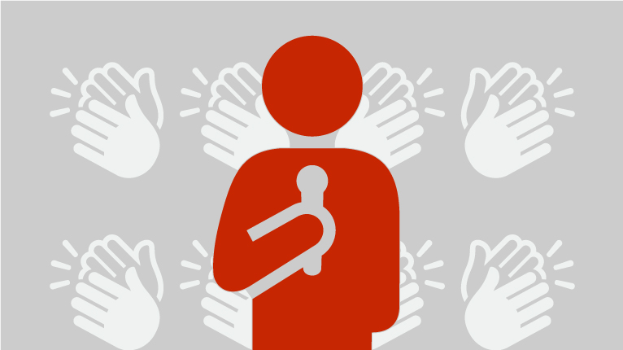
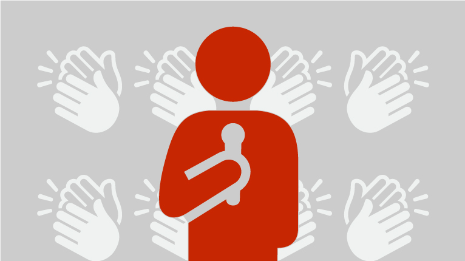

1) Make a Mind Map
Mind mapping is a process whereby you,ll literally map out the content you're planning to present using a visual outline. This simple step elevates your presentation by allowing you to more easily structure your information into a thoughtful and compelling flow. There are endless resources and mind mapping software you can find on online.
2)Make your presentation interesting
Just as you don't want to sit through a long presentation that solely consists of one person talking at you, your audience doesn't either. Save them (and yourself) from boredom by including beautiful visual aids. Use presentation tips for creating and videos for your deck. Your presentation will be more entertaining for the audience. Visual aids can serve as visual cues to help keep you on track.
3) Edit Your Content to the Most Important Points
A lot of student presenters make the mistake of saying too much about their topic. Overloading your slides with content results in a convoluted presentation. All of our presentation tips involve . Edit down your content to the main points that support your topic. Less is more in the presentation world. Let the visuals do more of the taking than the text.
4) Know More Than What You're Sharing
You need to be the expert in the subject you are speaking on. Collect as much information you can about your topic and read research papers. This will prepare you for any questions you might get from the audience.
If you receive a question you don't know the answer to, don't panic! Simply say you'll look into it and follow-up after the presentation.
5) Make Sure to Pace Yourself
One of the biggest traps newbie presenters fall into is speaking too fast. Nerves can make it difficult to take your time. Our presentation tips suggest using breathing exercise to keep you calm. Rushing through the slides may give off the wrong impression.
Effectively using pauses and silence will add impact to your speech. Take time to rehearse your pace to exude a ton of confidence and command over your topic.
6) Don't be Afraid to Show Your Personality
Students may fall into a formal and stiff style of speech during a presentation. This will result in a boring presentation. Make sure to show your personality.
Conversation speech will make you appear relatable and professional. Study your audience's demographics to understand the most effective communications methods.
7) Don't Just Practice; Rehearse
It's not enough to know what you're going to say. You have to know how you're going to say it.It is very important to rehearse and keep a check on your time limit for the presentation.